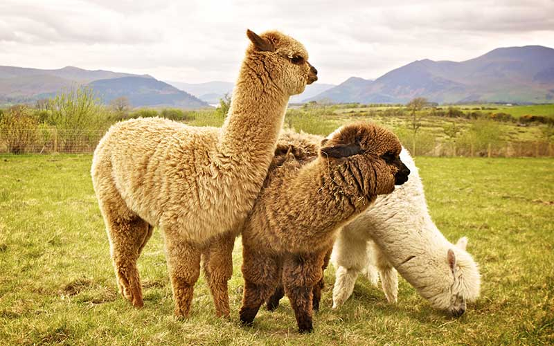
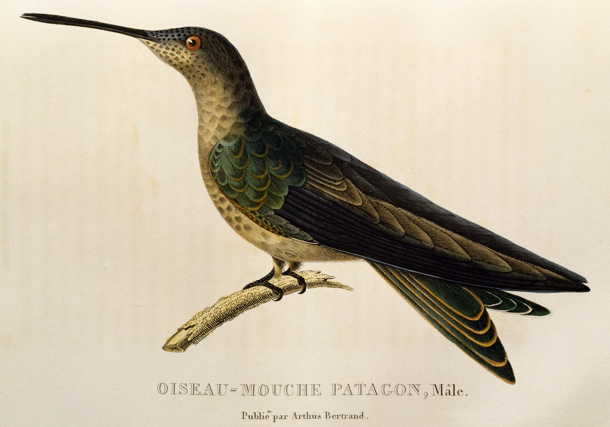
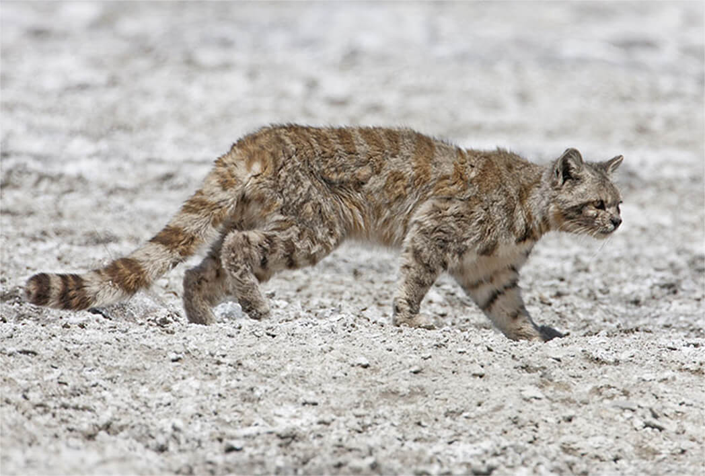
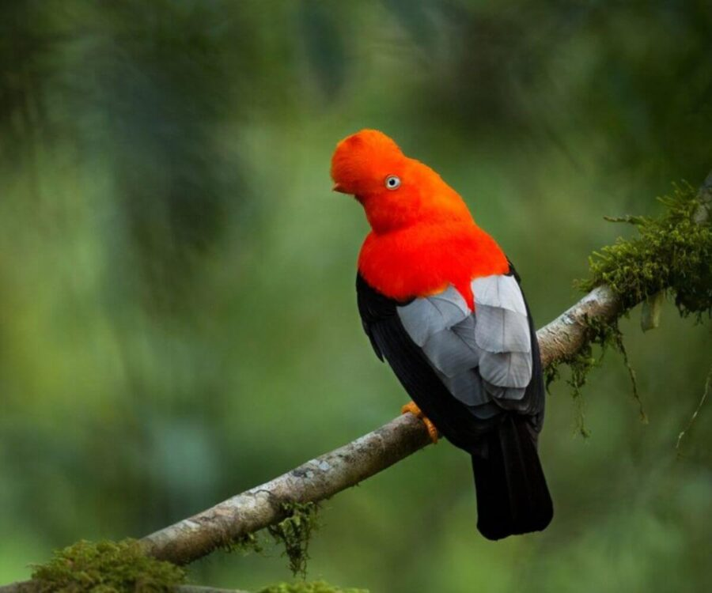

Fauna del Perù: meraviglie vive
Lama e AlpacaLama e alpaca sono gli animali più rappresentativi del Perù e vivono da secoli sulle Ande. Gli Inca li consideravano fondamentali per la sopravvivenza: fornivano lana, carne e venivano usati come animali da trasporto.Il lama è più grande, forte e resistente. Può trasportare carichi fino a 30 kg e veniva usato per attraversare i lunghi sentieri montani. L’alpaca, invece, è più piccolo e docile. La sua lana è una delle più pregiate al mondo: morbida, calda e disponibile in oltre 20 tonalità naturali. Entrambi sono animali sociali che vivono in gruppi e comunicano attraverso versi e… sputi, usati per difendersi o stabilire la gerarchia. |
 |
Colibrì del PerùIl Perù ospita più di 120 specie di colibrì, rendendolo uno dei Paesi più ricchi al mondo per questa famiglia di uccelli. Tra i più famosi:
|
 |
Condor delle AndeIl condor è uno degli uccelli più imponenti del mondo, con un’apertura alare che può superare i 3 metri. Per gli Inca rappresentava il mondo superiore, il regno degli dei. Vola sfruttando le correnti d’aria senza quasi mai muovere le ali, e si può osservare soprattutto nel Canyon del Colca, dove sorvola le montagne in cerca di cibo. |

|
Gatto delle AndeIl gatto delle Ande è uno degli animali più rari e misteriosi del pianeta. Vive sopra i 4.000 metri, tra rocce e zone aride, e per anni è stato considerato quasi estinto. È piccolo, con una lunga coda ad anelli che lo aiuta a mantenere l’equilibrio sulle rocce. La sua rarità lo rende un simbolo della fauna andina e un obiettivo prioritario per i progetti di conservazione. |
 |
Gallo delle rocceIl gallo delle rocce è l’uccello nazionale del Perù. Il maschio ha un piumaggio rosso-arancio brillante e compie spettacolari danze di corteggiamento nei lek, dove più maschi competono per attirare la femmina. È uno degli uccelli più fotografati del Paese. |
 |